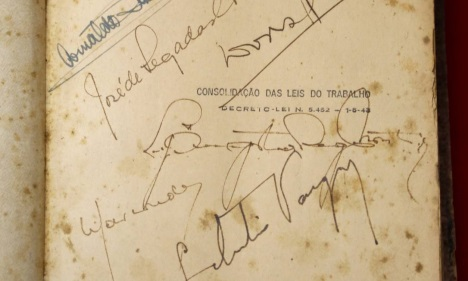

Decreto-Lei n.º 5.452, de 1° de maio de 1943 - é aprovada a Consolidação das Leis do Trabalho.
Fruto do empenho do ministro do Trabalho Alexandre Marcondes Filho, dos procuradores da Justiça do Trabalho Luiz Augusto de Rego Monteiro, Arnaldo Sussekind, Dorval Lacerda e José de Segadas Viana, e do consultor jurídico do Ministério do Trabalho, Indústria e Comércio, Oscar Saraiva, a CLT organizou a esparsa legislação trabalhista que vinha se construindo desde a década de 20, normatizando as diversas leis que se aplicavam de forma diferenciada às várias profissões. Essa legislação foi concebida sob a influência das convenções da Organização Internacional do Trabalho – OIT e da encíclica Rerum Novarum, do Papa Leão XIII, publicada em 1891 e que tratava da condição dos operários. Com algumas alterações feitas no decorrer dos anos e governos seguintes, é a norma trabalhista vigente até os tempos atuais.